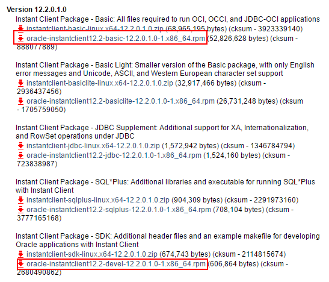

cx_Oracle模块的安装
这个专题讲解Python相关方面的内容，首先是运维方面，例如数据库，Linux等，后续会有Web，爬虫等。
上节讲了如何安装Python3.6 ，这节讲述如何利用Python 模块cx_Oracle 连接Oracle数据库
这节包含 oracle客户端的安装和cx_Oracle模块的安装两部分
环境设置
Linux系统为 Centos 6.8
Python环境为 Python 3.6
Oracle 模块:cx_Oracle
Oracle客户端:Oracle 12c Instant Client
1. 安装Oracle 12c Instant Client
由于这次我们使用Python连接Oracle，所以需要oracle客户端，这里我们使用Oracle 12c Instant Client
注意：12c客户端不支持连接9i及以下数据库，如有需求请下载11g的instant client

这里我们下载上图圈出来的2个rpm包(需要注册Oracle账号)
oracle-instantclient12.2-basic-12.2.0.1.0-1.x86_64.rpm
oracle-instantclient12.2-devel-12.2.0.1.0-1.x86_64.rpm
1.1安装Oracle客户端(root用户)
rpm -ivh oracle-instantclient12.2-basic-12.2.0.1.0-1.x86_64.rpm
rpm -ivh oracle-instantclient12.2-basic-12.2.0.1.0-1.x86_64.rpm
1.2添加ORACLE_HOME用户环境变量(root用户)

vim ~/.bash_profile
export ORACLE_HOME=/usr/lib/oracle/12.2/client64
export LD_LIBRARY_PATH=/usr/lib/oracle/12.2/client64/lib
2.下载cx_Oracle模块
我们知道Python在强大的在于他强大的模块功能，不论你想做什么都有相应的轮子供我们使用，今天介绍的是专门用户连接Oracle数据的一个模块
这里我们选择Linux版本。

3.安装cx_Oracle模块(root用户)
下载完成后我们安装
tar zxvf cx_Oracle-5.2.1.tar.gz
cd cx_Oracle-5.2.1
python setup.py build
python setup.py install
验证安装
如import无错误则说明安装成功

至此cx_Oracle模块已经安装完成，下期讲介绍如何利用cx_Oracle模块连接Oracle数据库